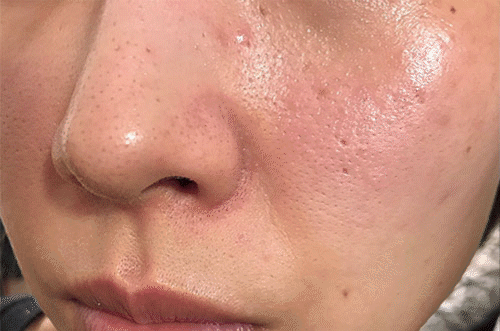

美妝新聞
快速修護你の肌膚！
油脂分泌旺盛的夏天，肌膚也「絕不痘留」
【悶熱的夏天油脂分泌旺盛，狂長暗瘡、粉刺、暗粒，肌膚發炎好痛苦？】用了「它」終於解決多年暗瘡爛面！

你相信嗎？只需短短3個月扭轉肌膚命運！
前排，日日化妝，落妝落唔乾淨。
結果暗瘡狂生、仲留底可惡嘅痘疤！
毛孔粗大，摸上去粗得好似木材咁…
尤其是到了夏天油脂分泌旺盛的季節， 臉上的暗瘡也跟著猖狂起來，一粒一粒的暗瘡讓人好崩潰…
上面嘅相係以前嘅我，雖然今年先3字頭
但係因為皮膚咁爛，有人話我睇落似40幾
所以，每日出門之前我搽上厚厚嘅粉底、遮瑕。
厚厚嘅粉底讓肌膚更不能呼吸，一到夏天就生暗瘡！
返屋企落妝落唔乾淨，皮膚就越嚟越爛。
真係好鬼煩！

因為臉爛成咁！有一次，
老公睇到我落完妝嘅臉，仲話：
“你真係好肉酸！好恐怖！好似鬼咁！”
好彩，我發現一個花最少錢，就能根本解決痘痘肌膚嘅燕窩修護神霜！
高效嘅【燕窩+沖繩植萃成分】成分,喺日本沖繩熱賣70年，
保證用咗一定會有改善！！
呢個係我用咗呢個之後嘅改變！係咪好犀利呢！！
暗瘡明顯淡化、鎮定痘痘，原本粗大嘅毛孔都變得好細緻。
仲俾老公讚我好似返到20幾歲咁（超開心）
直接入正題！先跟大家好好介紹一下~
能解決千瘡百孔嘅肌膚嘅神器！
就是來自日本【CHURACOS幼美肌修護水凝霜】
快速解決暗瘡、毛孔粗大嘅秘密係：
含有【修護極品】-燕窩精粹！
燕窩一直以來在美容護膚界被譽為【珍貴的護膚品】
燕窩中富含膠原蛋白、EGF生長因子、胺基酸等奢華美容成分。
唔單止能促進細胞新陳代謝，排走肌膚嘅毒素，
仲可以快速修護肌膚角質層嘅彈力蛋白，
讓皮膚白皙、發光、透亮、緊緻。
如果你也是尋尋覓覓肌膚修護產品，
揀呢個【CHURACOS修護水凝霜】，一定冇錯！
最適合夏天的Churacos,質地就係水凝霜，冇任何一絲黏膩！
洗完臉搽上Churacos，完全唔油！超清爽~滋潤！
唔悶痘，反而舒緩、鎮靜、修護痘痘肌。
而且，肌膚受損嘅部分都能迅速被修護。
夏天推薦放進冷藏保存，這樣使用起來更清涼、肌膚更舒服！
日日早晚都用Churacos修護水凝霜 餵肌膚喝燕窩，
用完一瓶後，暗瘡、暗粒、粉刺幾乎都唔見啦！
毛孔也變得超細膩~~
除了可以深層修護肌膚的燕窩精粹，
【CHURACOS幼美肌修護水凝霜】添加7種天然植萃美容成分
有了CHURACOS幼美肌修護水凝霜，
幫肌膚排毒代謝嘅燕窩+美肌效果7倍の沖繩植物精粹
每天只要30秒，就能讓、暗粒消失！仲能讓毛孔都唔見！
一瓶用晒，包你素顏肌膚靚到發光！
我嘅真實體驗：
【Churacos燕窩修護水凝霜】真的用了就能養成日妞嘅水煮蛋肌！
夏季去暗瘡交給Churacos從此徹底解決暗瘡,養成專屬你の幼美肌！
【香港限定49折 免運送到屋企】